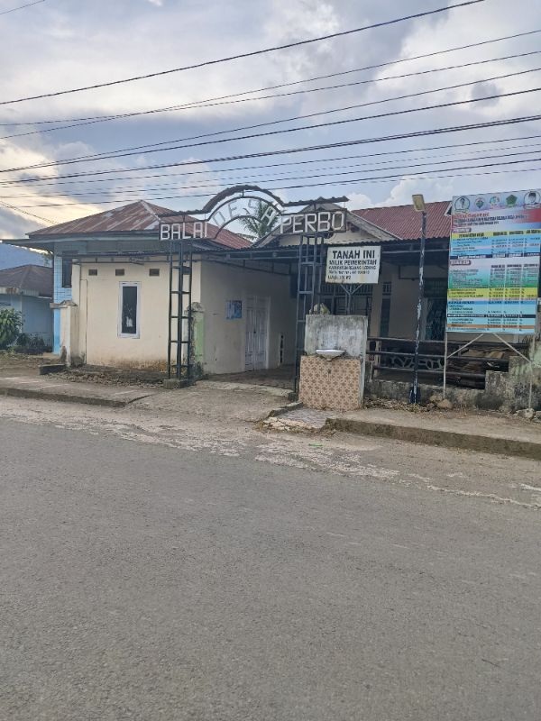
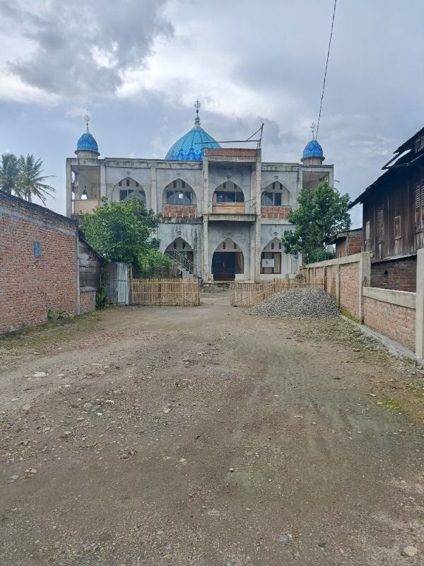
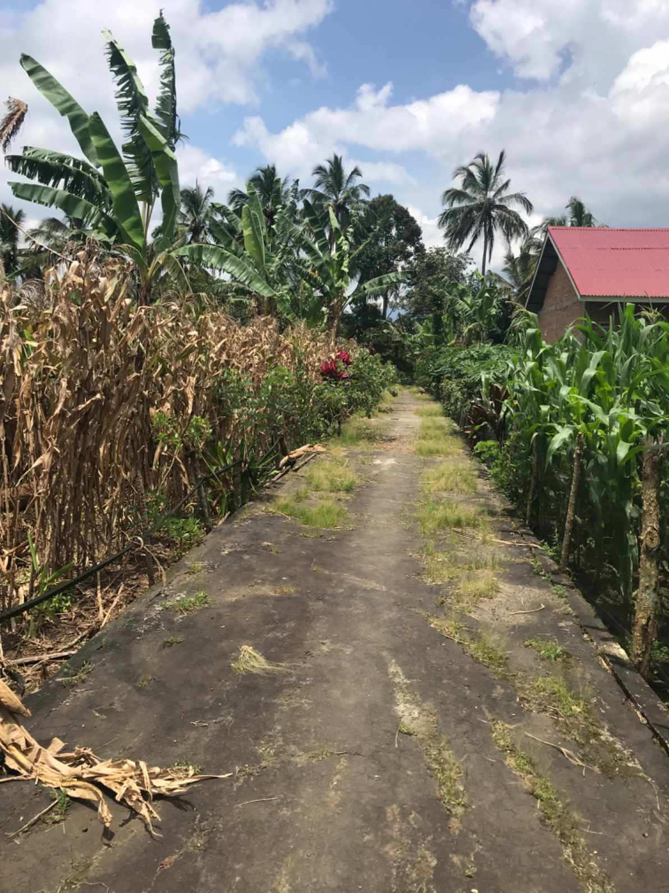
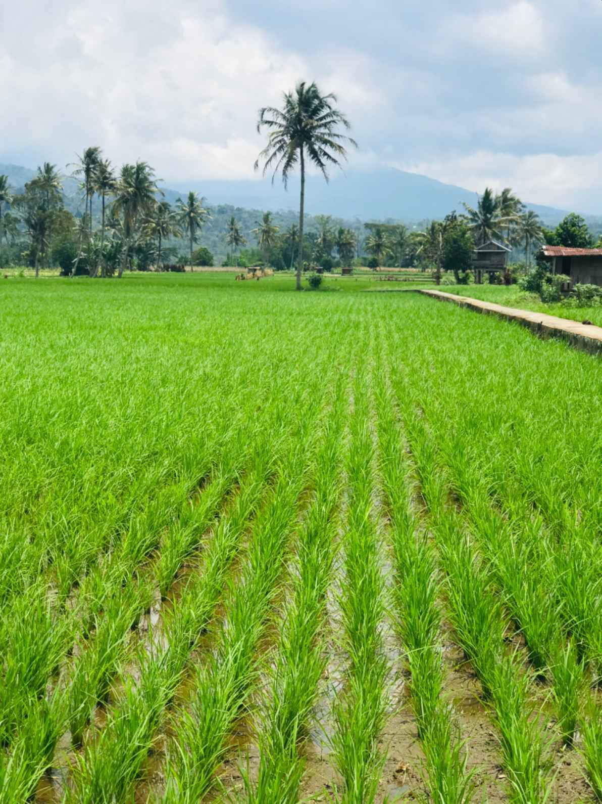

Selamat Datang di Desa Perbo
Desa Asri, Maju, dan Sejahtera

Web Resmi Pemerintah Desa Perbo
Jl. Desa Perbo No. 123, Email: desa.perbo@email.com
Web Developer
Desa Perbo terletak di provinsi bengkulu dan dikelilingi perbukitan di bagian utara terhampar luas bukit basah dengan keaneka ragaman flora dan faunanya. disebelah selatan tedapat bukit hitam yang berbatasan langsung dengan kabupaten kerinci.



Desa Asri, Maju, dan Sejahtera
Desa Perbo adalah salah satu desa di Kecamatan Curup Utara, Kabupaten Rejang Lebong, Bengkulu, yang terletak di wilayah dataran tinggi terkurung oleh beberapa deratan pegunungan. Desa ini didominasi sektor pertanian dan perkebunan, seperti padi, jagung, dan kopi, dengan kondisi geografis dataran tinggi berbukit. Desa ini berbatasan dengan wilayah pertanian dan perkebunan lain di Curup Utara. Berikut adalah poin-poin geografis DESA PERBO, Curup Utara: Lokasi: Kecamatan Curup Utara, Kabupaten Rejang Lebong, Provinsi Bengkulu. Topografi: Berada di wilayah dataran tinggi/perbukitan yang menjadi ciri khas wilayah Kecamatan Curup Utara. Batas Wilayah (desa): berbatasan dengan Desa Batu Panco (selatan), Kelurahan Tunas Harapan (Utara), Kelurrahan dusun curup (barat), Desa Lubuk Kembang (timur). Potensi: Pertanian tanaman pangan (padi, jagung) dan perkebunan kopi. Iklim/Kondisi: Merupakan daerah terkurung PEGUNUNGAN dan dilalui sebagian hulu Sungai Musi.